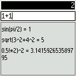

Javia Calculator
 Javia Calculator is an easy-to-use calculator for mobile phones; it features an input mode specially designed for the mobile phone's keypad, which allows to quickly and easily type mathematical expressions.
Javia Calculator supports trigonometric and hyperbolic functions, logarithms and exponentiation, combinations, permutations and factorial, and allows you to define new functions and constants.
Javia Calculator requires a phone with CLDC-1.1 (if you bougth your phone in 2005 or more recently, it likely supports CLDC-1.1). To find out whether your phone can run Javia Calculator, simply try to install the application, as your mobile phone will inform you if it can't handle it.
Download
Version 0.1.0, released on 2006-12-04, size 30 kB, is a beta release -- please provide feedback with suggestions and bug-reports to the author, Mihai Preda: mihai@moopenstral.net.
I appreciate other people's writing about Javia Calculator and linking to this page, but please read these linking guidelines first.
If you want to type the download link on your mobile's keypad, you may use the short form: calc.javia.org/jar .
Key-Menu
The two keys * and # are special, because they open what I call the operators' key-menu and respectively the functions' key-menu.
 The left key-menu, activated by pressing *, contains the operators.
When the menu is active (i.e. displayed on the screen) you may select an entry by pressing
one of the keys of the numeric keypad (1-9, *0#).
The top row of the key-menu corresponds to the keys 1 2 3, and the bottom row
corresponds to the keys * 0 #.
The left key-menu, activated by pressing *, contains the operators.
When the menu is active (i.e. displayed on the screen) you may select an entry by pressing
one of the keys of the numeric keypad (1-9, *0#).
The top row of the key-menu corresponds to the keys 1 2 3, and the bottom row
corresponds to the keys * 0 #.
For example, pressing the * key when the operators menu is active produces the + operator, while the 7 key produces the * operator, as is displayed in the menu visible on the screen.
When in the normal input mode (no key-menu is active) you can easily obtain the + operator by double-pressing the * key (as the first press activates the operators' menu, while the second press selects + from the menu. Of course, you don't have to wait for the menu when you double-press).
 The right key-menu, activated with the # key,
contains everything else: the decimal dot, functions and constants.
The right key-menu, activated with the # key,
contains everything else: the decimal dot, functions and constants.
Some entries on the functions' menu (such as , ) are displayed in yellow. These colored entries open additional sub-menus that contain related entries. For example, opens the trigonometric menu where you find sin, cos, tan.
A yellow menu entry can also be selected directly by double-pressing its key. For example, when the functions' menu is active, a double-press on * produces the sin function, and a double-press on 0 produces the ln function.
A key-menu which is active can be dismissed without selecting anything from it by pressing any softkey, any arrow-key, or the clear key. In this situation, the normal function of the pressed key (cursor navigation, clear) is not invoked, the only effect being that the key-menu is dismissed.
Operators
 Pressing * opens the operators' menu, which contains the usual operators
Pressing * opens the operators' menu, which contains the usual operators+ - * /, the parentheses ( ), as well as:
| % | real modulo (remainder). E.g. 1.75 % 0.5 = 0.25 |
|---|---|
| ^ | power (exponentiation) |
| ! | the factorial, extended to real numbers |
| , | the comma, used to separate the parameters of a function E.g. min(3/4,10/16) |
Functions, constants, decimal dot
 Pressing # opens the functions' menu.
This menu contains everything except the operators:
Pressing # opens the functions' menu.
This menu contains everything except the operators:
| trigonometric functions menu: sin cos tan, asin acos atan, and their hyperbolic variants. | |
| logarithms menu: lg (base 10 logarithm), ln (natural logarithm), lb (base 2 logarithm), cbrt (cubic root). | |
| . | decimal dot |
| pi | PI constant |
| e | Euler constant |
| various functions: combinations, permutations, random number generator, fractional and integer part, min, max, abs. | |
| names for user-defined functions and constants | |
| := | function/constant definition symbol |
| sqrt | square root |
| ans | Answer, the result of the previous operation |
| E | Exponent notation symbol (e.g. 2.5E3 == 2500) |
User-defined variables and functions
 To define a new variable or function, first choose it's name from the letters menu.
You have a limited choice of one-letter names: a, b, c, d, m, n, f, g, h; these may all be used
to name either variables or functions.
To define a new variable or function, first choose it's name from the letters menu.
You have a limited choice of one-letter names: a, b, c, d, m, n, f, g, h; these may all be used
to name either variables or functions.
You use the definition symbol, :=, to give a value to the variable:
a:=sqrt(pi/2)
gives a value to the variable a.
In order to define a function, you must use one of the special parameter names
x, y or z in the function's expression.
x denotes the first parameter of the function, while z is the
third parameter.
The presence of at least one parameter is what differentiates a function definition from a variable definition.
Example:
f:=sqrt(x^2+y^2
defines the function f(x,y). (remark that the closing parentheses at the end was omitted).
All user definitions (variables and functions) are saved between invocations (they're persistent).
Operations History
The most recent 32 expressions are saved in history. You can easilly navigate the history using the UP/DOWN arrows.Parentheses
Use parentheses ( ) to control the evaluation of the expressions. You may omit the parentheses located at the beginning or at the end of the expression, as they are implied in order to correctly match the remaining parentheses.1+2*3 = 7 (1+2)*3 = 9 1+2)*3 = 9In the last expression the missing open parentheses is implicitly positioned at the beginning of the expression.
Edit Navigation
The LEFT/RIGHT arrows are used to move the cursor inside the expression's text. When the expression is long and spans multiple lines, the UP/DOWN arrows may be used to move the cursor vertically between lines.
When the expression is single-line, the UP/DOWN arrows navigate within the history. DOWN moves towards older expressions, while UP moves towards more recent ones. In a multi-line expression the history navigation takes place when the cursor tries to move vertically beyond the bounds of the expression (i.e. when the cursor is positioned on the first line and you press UP, or when the cursor is positioned on the last line and you press DOWN).
The Left Softkey displays the application's menu, which allows to change the angle unit (between radians and degrees), and offers access to the Help and About screens, as well as an option to exit the application.
The Right Softkey is used to clear the token positioned before the cursor, i.e. to erase, similarly to the way Backspace works on a computer. Other additional keys which are present on some mobiles (for example, a dedicated Clear key) may have the same effect.